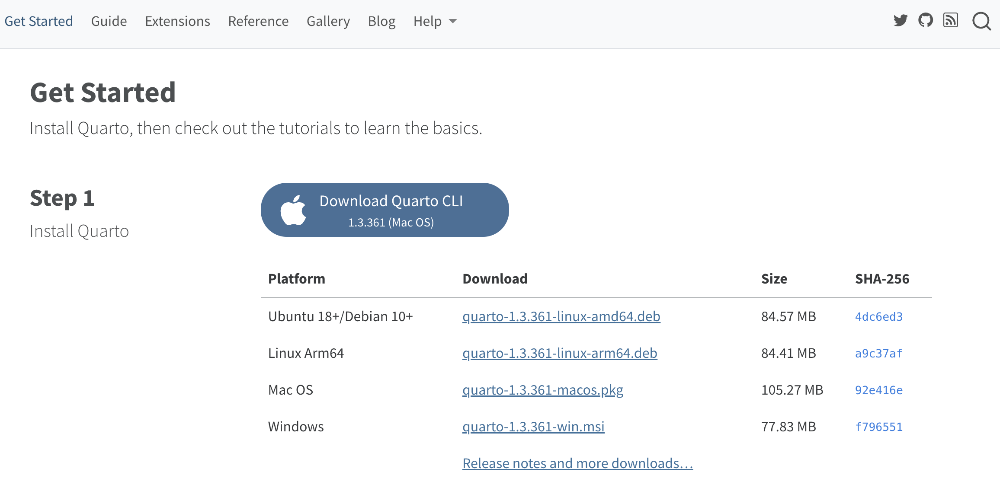
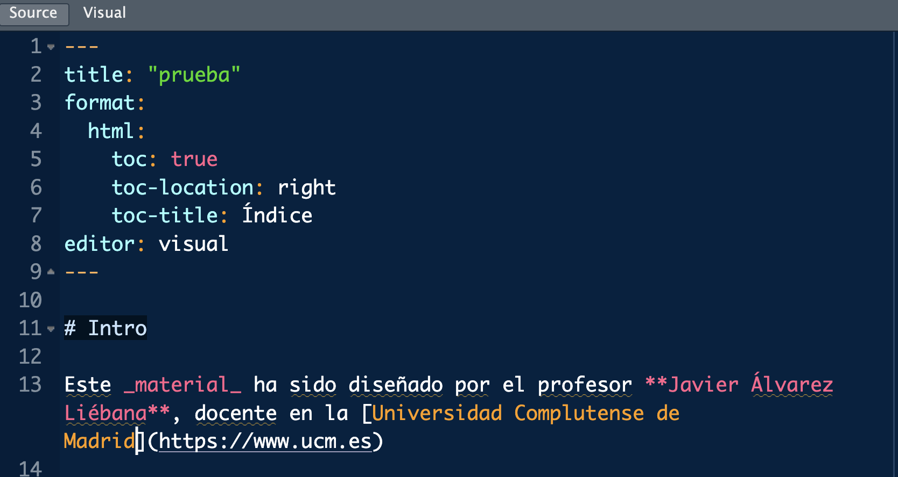
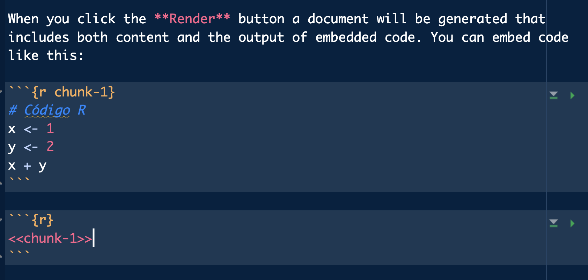
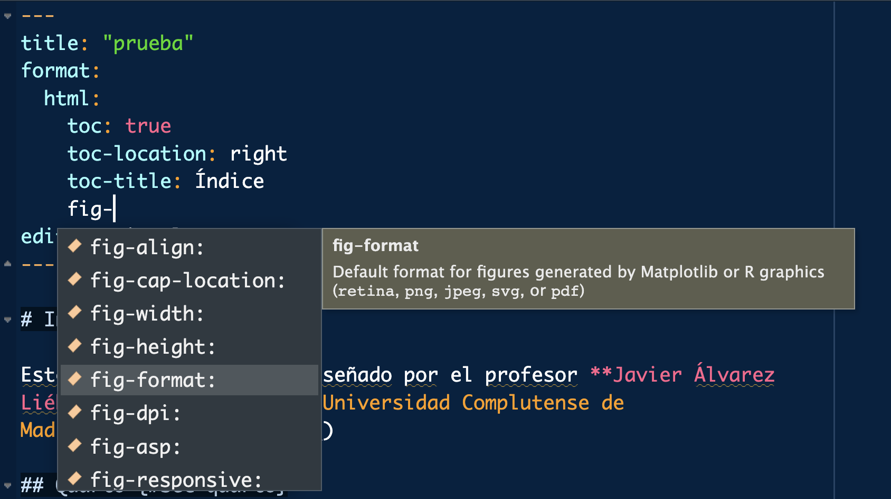
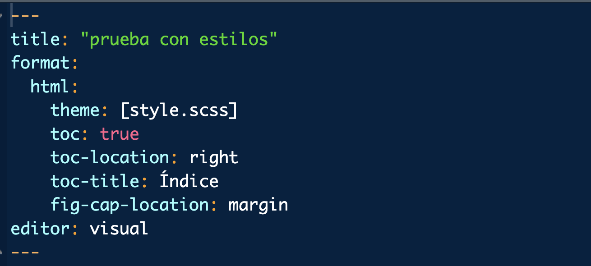

Data programming and intro to R
Prepare, clean, transform and enrich data in R
Welcome to R!
Put your spreadsheets, SAS and SPSS aside
Hi!
Mail: javalv09@ucm.es.

Javier Álvarez Liébana from Carabanchel (Madrid).
Degree in Mathematics (UCM). PhD in Statistics (UGR).
In charge of data visualization and analysis for the Principality of Asturias (2021-2022) during the COVID pandemic
Member of the Spanish Society of Statistics and OR and the Spanish Royal Mathematical Society.
Currently, Assistant Professor at the Faculty of Statistics of the UCM. Disseminating via Twitter e Instagram
Goals
.png)
Take away the fear of programming → learn to program by programming
Understanding basic R concepts from scratch → learning to abstract ideas and algorithms
Utility of programming → reproducible, transparent and maintainable workflows.
Introduction to analysis and preprocessing of data →
{tidyverse}.Handling advanced data types →
{forcats},{lubridate}and{purrr}packages
Evaluation: intro to R
- Attendance and individual participation (30%)
- Final exam on 10/09/2024, 15:00-16:10 (70%).
- Max grade: to get a grade greater than 9/10 you should get at least 9/10 in the final exam.
Evaluation: data programming
- Attendance and individual participation (10%)
- 2 individual tasks done during the course (15%-25%).
- 1 group task between 4 and 6 people (20%). Deadline: 23/12/2024.
- Final exam with all materials and internet (30%). You are exempt if you get more than 7.5/10 in the previous tasks.
- Max grade: to get a grade greater than 9/10 you should get at least 9/10 in the individual tasks.
Planning
- Final exam (intro R 70%): 10/09/2024 (15:00 - 16:10).
Individual task I (15%): deadline 03/11/2024
Individual task II (25%): deadline 30/11/2024
Group task (20%): deadline 23/12/2024.
- Final examen (30% if required): TBA
Planning: intro R
Planning: data programming
Materials
- Slides: slides made with
Quartoavailable and updated on https://javieralvarezliebana.es/docencia/mucss-data-programming. In the slide menu (bottom left) you have an option to download them in pdf inTools
Material: workbooks and extra materials.
üóÉ Data: datasets that will be used, available on https://javieralvarezliebana.es/docencia/mucss-data-programming/material
üìö Extra resources: https://r4ds.had.co.nz/, https://cdr-book.github.io/ and https://ivelasq.quarto.pub/intro-to-quarto/.
Datasets
- üóÉ Data: datasets that will be used, available on https://javieralvarezliebana.es/docencia/mucss-data-programming/material
airqualityfrom the{datasets}package (already installed by default): daily measurements (153 observations) of air quality in New York, from May to September 1973. Measured 6 variables: ozone, solar radiation, wind, temperature, month and day.pinnipeddel paquete{Biostatistics}: peso corporal y cerebral de 33 especies de pinnípedos (morsas, leones marinos y elefantes marinos) desagregado por sexos y mono/poligamia.
Datasets
- üóÉ Data: datasets that will be used, available on https://javieralvarezliebana.es/docencia/mucss-data-programming/material
discursos: recopila los discursos de navidad de los jefes de Estado en España (en dictadura y en democracia) desde 1946 hasta 2021relig_incomedel paquete{tidyr}: recopila los datos de ingresos anuales en función de la religión (fuente original https://www.pewresearch.org/religion/religious-landscape-study/)whodel paquete{tidyr}: datos de la OMS respecto infecciones por tuberculosis, desagregados por tipo de enfermedad, sexo y edad.billboarddel paquete{tidyr}: ranking top 100 de canciones según Billboard (algo parecido a Los 40) para el año 2000.
L1: first steps
Introduction to R and RStudio. Working with projects. First uses of functions and packages. Basic data types
Requirements
For the course, the only requirements will be:
- Internet connection (to download some data and packages).
- Install R: it will be our language. We will download it (for free) from https://cran.r-project.org/
- Install RStudio from https://posit.co/download/rstudio-desktop/


R vs RStudio


We will program as we write
- We will need a grammar, a language (
R)
- And an environment, such as Word (
RStudio) to write it
Installing R
The R language will be our grammar and spelling (our rules of the game)
Step 1: go to https://cran.r-project.org/ and select your operating system.
Step 2: for Mac, simply click on the .pkg file, and open it once downloaded. For Windows systems, we need to click on install R for the first time and then on Download R for Windows. Once downloaded, open it like any installation file.
Step 3: open the installation executable.
Cuidado
Whenever you need to download something from CRAN (either R itself or a package), make sure you have an internet connection.
First operation
To check the installation, after opening R, you should see the R GUI (Graphical User Interface) with a white screen similar to this (console).

First code: we will assign the value 1 to a variable called a (we will write the code in the console and press “enter”). Then we will do the sum a + b.
First operation
To check the installation, after opening R, you should see the R GUI (Graphical User Interface) with a white screen similar to this (console).
First code: we will assign the value 1 to a variable called a (we will write the code in the console and press “enter”). Then we will do the sum a + b.
First operation
To check the installation, after opening R, you should see the R GUI (Graphical User Interface) with a white screen similar to this (console).
First code: we will assign the value 1 to a variable called a (we will write the code in the console and press “enter”). Then we will do the sum a + b.
Note that…
In the console, a number [1] appears: it’s simply an element counter (like counting rows in Word)
Installing R Studio
RStudio will be the Word we will use to write (what is known as an IDE: Integrated Development Environment).
Step 1: go to the official RStudio website (now called Posit) and select the free download.
Step 2: select the executable that appears according to your operating system.
Step 3: after downloading the executable, open it like any other and let the installation finish.
RStudio Organization
When you open RStudio you will likely have three windows:
- Console: is the name for the large window that takes up most of your screen. Try writing the same code as before (the sum of the variables) in it. The console is where we will execute commands and display results.

RStudio Organization
When you open RStudio you will likely have three windows:
- Environment: the small screen (you can adjust the margins with the mouse to your liking) that we have in the top right corner. It will show us the variables we have defined.

RStudio Organization
When you open RStudio you will likely have three windows:
- Multi-purpose panel: the window at the bottom right will be used to look for function help, as well as to visualize plots.

What is R? Why R?

What is R? Why R?

R is the evolution of the work of Bell Laboratories with the S language, which was brought into the open-source world by Ross Ihaka and Robert Gentleman in the 1990s. The version R 1.0.0 was released on February 29, 2000.
What is R? Why R?
R is the statistical language par excellence, created by and for statisticians, with 6 fundamental advantages over Excel, SAS, Stata, or SPSS:
- Programming language: the obvious → replicable analysis
- Free: the philosophy of the
Rcommunity is to share code under copyleft → ethical use of spending and algorithms
- Open-source software: not only is it free, but it also allows free access to others’ code, even to the source code itself → flexibility and transparency (Free and Open Source Software FOSS)
What is R? Why R?
R is the statistical language par excellence, created by and for statisticians, with 6 fundamental advantages over Excel, SAS, Stata, or SPSS:
- Modular language: we have installed the minimum, but there are codes from other people that we can reuse (almost 20,000 packages) → time saving and immediate innovation
- High-level language: facilitates programming (like Python) → lower learning curve
- Community and employability: along with Python, it is the most used language in the field of statistics and data science in research, teaching, companies (Línea Directa, Mapfre, Telefónica, Orange, Apple, Spotify, Netflix, El País, Civio, HP, etc.) and public organizations (ISCIII, CNIC, CNIO, INE, IGN, CIS, CEO, DGT, AEMET, RTVE, etc.)
Why programming?
Automate → it will allow you to automate recurring tasks.
Replicability → you will be able to replicate your analysis in the same way every time.
Flexibility → you will be able to adapt the software to your needs.
Transparency → to be audited by the community.

Fundamental Idea: Packages
One of the key ideas of R is the use of packages: codes that other people have implemented to solve a problem
Fundamental Idea: Packages
Once installed, there are two ways to use a package (take it off the shelf)
- Whole package: with
library(), using the package name without quotes, we load the whole book into the session
You will be wrong
During your learning, it will be very common for things not to work out on the first try → you will be wrong. It will not only be important to accept it but also to read the error messages to learn from them.
- Error messages: preceded by “Error in…” and will be those failures that prevent execution
Scripts (.R files)

A script will be the document in which we program, our .doc file (here with a .R extension) where we will write the commands. To open our first script, click on the menu in File < New File < R Script.
Be careful
It’s important not to overuse the console: everything you don’t write in a script, when you close, will be lost.
Be careful
R is case-sensitive: it is sensitive to uppercase and lowercase, so x and X represent different variables.
Running the first script
Now we have a fourth window: the window where we will write our codes. How do we run it?
- Write the code to be executed.
- Save the .R file by clicking on
Save current document.
- The code does not execute unless we indicate it. We have three options to run a script:
- Copy and paste into the console.
- Select lines and press
Ctrl+Enter - Enable Source on Save next to save: not only saves but also executes the entire code.
Organizing: projects
Just as we usually work organized by folders on the computer, in RStudio we can do the same to work efficiently by creating projects.
A project will be a “folder” within RStudio, so our root directory will automatically be the project folder itself (allowing us to switch from one project to another using the top right menu).
We can create one in a new folder or in an existing folder.”

üíª It‚Äôs your turn
üìù Create in your computer a folder of the subject and create inside it the RStudio project: it is there where you are going to save everything that we will do along this course, after creating the project you will have an R Project file. Then create in this folder two subfolders: data (this is where you will save the different datasets that we will use) and scripts (this is where you will save the .R files of each class).
üìù Inside the project create a script Exercises-class1.R (inside the scripts folder). Once created, define in it a variable named a and whose value is -1. Execute the code in the (three) ways explained before.
üìù Add below another line to define a variable b with the value 5. Then save the multiplication of both variables. Execute the code as you want.
üìù Modify the code below to define two variables c and d, with values 3 and -1. Then divide the variables and save the result.
üìù Assign to x a positive value and then compute its square root; assign to y a negative number and compute its absolute value using abs().
Note that…
Commands like sqrt(), abs() or max() are what we call functions: lines of code that we have “encapsulated” under a name, and given some input arguments, execute the commands (a sort of shortcut). In the functions the arguments will ALWAYS be enclosed in parentheses
üìù Using the variable x already defined, complete/modify the code below to store in a new variable z the result stored in x minus 5.
üìù Define an x variable and assign it the value -1. Define another y and assign it the value 0. Then perform the operations a) x by y; b) square root of x. What do you get?
From CELL to TABLE
What data type can we have in each cell of a table?

- Cell: an individual piece of data of a specific type.
- Variable: concatenation of values of the same type (vectors in R).
- Matrix: concatenation of variables of the same type and length.
- Table: concatenation of variables of different types but the same length
- List: concatenation of variables of different types and different lengths
But first…best practices
Before we continue, it’s important to know something as soon as possible: starting with programming can be frustrating
Just like when learning a new language, the first obstacle is not so much what to say but how to say it correctly. The same goes for R, so let’s standardize our programming style as much as possible to avoid future errors.
But first…best practices
- Tip 2: program like you write. Just like when writing in Spanish, get used to incorporating spaces and line breaks to avoid making your code hard to read (it’s a good practice, not a requirement, because
Rdoes not process spaces).
- Tip 3: don’t be chaotic, standardize names. Always get used to naming variables consistently. The only requirement is that they must always start with a letter (and without accents). The most recommended form is
snake_case.
But first…best practices
- Tip 4: make reading and writing easier, set limits. In
Tools < Global Options, you can customize some options inRStudio. InCode < Display, you can setShow marginto display an “imaginary” margin (not interacting with the code) to “force” you to make line breaks.
But first…best practices
- Tip 5: the tab key is your best friend. In
RStudio, there’s a wonderful tool: if you type part of a variable or function name and press tab,RStudiowill autocomplete it for you.

But first…best practices
- Tip 6: no single parentheses. Whenever you open a parenthesis, you must close it. To make this task easier, go to
Tools < Global Options < Code < Displayand enable theRainbow parentheses option.

But first…best practices
- Tip 7: pay attention to the left side. You will not only see the line of code you are on but also, in case of a syntax error,
RStudiowill notify you.

- Tip 8: try to always work by projects (for this class, create a script
class1.Rin the project we created before)
See more tips at https://r4ds.had.co.nz/workflow-basics.html#whats-in-a-name
Cells: data types
Are there variables beyond numbers in data science? For example, think about the data you might store about a person:
- The answer to the question “Are you enrolled in the Faculty?” will be what we call a logical variable (
TRUEif enrolled orFALSEotherwise).
- Their date of birth will be precisely that, a date.
Numerical variables
The simplest data (which we’ve already used) will be numeric variables. To find out the data class in R of a variable, we use the class() function.
Numerical variables
The simplest data type (we have already used it) will be the numeric variables. To know the data class in R of a variable we have the function class().
To know its typology (format) variable we have typeof().
[1] "double"[1] "integer"Note that…
In R we have a collection of functions starting with as.x() that serve as conversion functions: a data that was of one type, we convert it to type x.
Numerical variables
In addition to the “common” numbers we will have the plus/minus infinity coded as Inf or -Inf.
Numerical variables
With numeric variables we can perform the arithmetic operations of a calculator: adding (+)…
String variables
Let us imagine that, in addition to the age of a person we want to store his/her name: now the variable will be of type character.
The text strings are a type with which we obviously cannot perform arithmetic operations (other operations such as pasting or locating patterns can be performed).
Reminder
Text variables (character or string) are ** ALWAYS in quotes**: TRUE (logical, binary value) is not the same as "TRUE" (text).
First function: paste
As we have commented R we will call function a piece of encapsulated code under a name, and which depends on some input arguments. Our first function will be paste(): given two strings, it allows us to paste them together.
First function: paste

How do I know what arguments does a function need?
By typing ? paste in the console, you will get a help in the multipurpose panel, where you can see in its header what arguments the function already has default arguments assigned to it.
First function: paste
The arguments (and their detail) can also be consulted by tabulating (after a comma).

Functions: default arguments
It is very important to understand the concept of default argument of a function in R: it is a value that the function uses but sometimes we may not see because already has a value assigned.
[1] "Javi Álvarez"[1] "Javi Álvarez"Fíjate que...
The = operator is reserved for assigning arguments within functions. For all other assignments, we will use <-.
First package: glue
A more intuitive way to work with text is to use the {glue} package: the first thing to do is to “buy the book” (if we have never done it before). After that load the package
With the glue() function of that package we can use variables inside strings. For example, “age is … years old”, where the age is stored in a variable.
Logical variables
Another fundamental type will be the logical or binary variables (two values):
TRUE: true stored internally as a 1.FALSE: false stored internally as a 0.
Logical variables
As we will see shortly, logical variables can actually take a third value: NA or missing data, representing not available, and it will be very common to find it within a database.
Logical conditions
Logical values are usually the result of evaluate logical conditions. For example, imagine that we want to check whether a person is named Javi.
With the logical operator == we ask if what we have stored on the left is same as what we have on the right: we ASK
Note that…
It is not the same <- (assignment) as == (we are asking, it is a logical comparison).
Logical conditions
In addition to “equal to” versus “different” comparisons, also order comparisons such as less than <, greater than >, <= or >=. Is the person less than 32 years old?
Date variables
A very special data type: the date type data.
It looks like a simple text string but should represent an instant in time. What should happen if we add a 1 to a date?
Dates cannot be string/text: we must convert the text string to date.
Date variables
Once installed, of all the packages (books) that we have, we will indicate it to load this one concretely.
To convert to date type we will use the as_date() function of the {lubridate} package (default in yyyy-mm-dd format).
Date variables
In as_date() the default date format is yyyy-mm-dd so if the string is not entered correctly…
For any other format we must specify it in the optional argument format = ... such that %d represents days, %m months, %Y in 4-year format and %y in 2-year format.
Date variables
In this package we have very useful functions for date management:
- With
today()we can directly obtain the current date.
Cheatsheets

More information
You have a pdf summary of the most important packages in the corresponding folder on campus
üíª It‚Äôs your turn
Try to perform the following exercises without looking at the solutions
üìù Define a variable that stores your age (called age) and another with your name (called name).
üìù Check with this variable age if it is NOT 60 years old or if it is called "Ornitorrinco" (you must obtain logical variables as a result).
üìù Why does the lower code give an error?
üìù Define another variable called siblings that answers the question ‚Äúdo you have siblings?‚Äù and another variable that stores your date of birth (called birth_date).
üìù Define another variable with your last name (called surname) and use glue() to have, in a single variable called full_name, your first and last name separated by a comma.
L2 : databases
Concatenating cells: vectors. First databases
Vectors: concatenation
When working with data, we often have columns that represent variables: we will refer to these as vectors, which are a concatenation of cells (values) of the same type (similar to a column in a table).
The simplest way to create a vector is with the c() function (c stands for concatenate), and you just need to input the elements within parentheses, separated by commas.
Consejo
An individual number x <- 1 (or x <- c(1)) is actually a vector of length one –> everything we know how to do with a number, we can do with a vector of numbers.
Vectors: concatenation

Numeric sequences
The most common type of vector is numeric, specifically, the well-known numeric sequences (e.g., the days of the month), used among other things, to index loops.
The seq(start, end) function allows us to create a [**numeric sequence]**{.hl-yellow} from a starting element to an ending one, advancing one by one.
Numeric sequences
A shortcut is the 1:n command, which returns the same as seq(1, n).
If the starting element is greater than the ending one, it understands that the sequence is in descending order.
Numeric sequences
Sometimes we may want to define a sequence with a specific length.
[1] 1.000000 9.166667 17.333333 25.500000 33.666667 41.833333 50.000000We might also want to generate a vector of n repeated elements.
String vectors
A vector is a concatenation of elements of the same type, but they don’t necessarily have to be numbers. Let’s create a sample sentence.
String vectors
What will happen if we concatenate elements of different types?
Note that since all elements must be of the same type, what R does is convert everything to text, violating the data integrity.
Operations with vectors
With numeric vectors, we can perform the same arithmetic operations as with numbers → a number is a vector (of length one).
What will happen if we add or subtract a value to a vector?
Adding vectors
Vectors can also interact with each other, so we can define, for example, vector sums (element by element).
Since the operation (e.g., a sum) is performed element by element, what will happen if we add two vectors of different lengths?
Comparing vectors
A very common operation is to ask questions of the data using logical conditions. For example, if we define a vector of temperatures…
Which days were below 22 degrees?
This will return a logical vector, depending on whether each element meets the given condition (of the same length as the vector being queried).
Comparing vectors
Logical conditions can be combined in two ways:
- Intersection: all concatenated conditions must be met (AND conjunction with
&) to returnTRUE.
- Union: it is enough for at least one condition to be met (OR conjunction with
|).
Getting elements
Another common operation is accessing or getting elements. The simplest way is to use the [i] operator (access the i-th element).
Since a number is just a vector of length one, this operation can also be applied using a vector of indices to select.
Consejo
To access the last element without worrying about its position, you can pass the vector’s length as the index x[length(x)].
Removing elements
Sometimes, instead of selecting, we may want to remove elements. This is done with the same operation but using negative indexing: the opetator [-i] «un-select» the i-th element
[1] "hi" "how" "are" "you" "?" [1] "hi" "are" "you" "?" In many cases, we want to select or remove elements based on logical conditions, depending on the values, so we will pass the condition itself as the index (remember, x < 2 returns a logical vector).
Stats operations
We can also make use of statistical operations, such as sum(), which, given a vector, returns the sum of all its elements.
What happens when a data point is missing?
Stats operations
As we’ve mentioned, logical values are internally stored as 0 and 1, so we can use them in arithmetic operations.
For example, if we want to find out the number of elements that meet a condition (e.g., less than 3), those that do will be assigned a 1 (TRUE), and those that don’t will get a 0 (FALSE). Therefore, summing the logical vector will give us the number of elements that meet the condition.
Stats operations
Another common operation that can be useful is the cumulative sum with cumsum(), which, given a vector, returns a vector where each element is the sum of the first, the first plus the second, the first plus the second plus the third, and so on.
What happens when a data point is missing?
In the case of the cumulative sum, what happens is that from that point onward, all subsequent accumulated values will be missing.
Stats operations
Another common operation that can be useful is the difference (with delay) with diff() which, given a vector, returns a vector with the second minus the first, the third minus the second, the fourth minus the third…and so on.
Stats operations
Other common operations are mean, median, percentiles, etc.
- mean: centrality measure that consists of adding all the elements and dividing by the number of elements added. The best known but the least robust: given a set, if outliers (very large or very small values) are introduced, the mean is very easily perturbed.
Stats operations
Other common operations are mean, median, percentiles, etc.
- Median: measure of centrality that consists of ordering the elements and keeping the one that occupies the middle.
Sorting vectors
Finally, a common action is to know sort values:
sort(): returns the sorted vector. By default from smallest to largest but withdecreasing = TRUEwe can change it.
[1] 7 20 23 25 33 41 65 77 81[1] 81 77 65 41 33 25 23 20 7üíª It‚Äôs your turn
Try to perform the following exercises without looking at the solutions
- Exercise 1
- Exercise 2
- Exercise 3
- Exercise 4
- Exercise 5
- Exercise 6
- Exercise 7
- Exercise 8
- Exercise 9
- Exercise 10
- Exercise 11
- Exercise 12
üìù Define the vector x as the concatenation of the first 5 odd numbers. Calculate the length of the vector
üìù Access the third element of x. Access the last element (regardless of length, a code that can always be executed). Delete the first element.
üìù Get the elements of x greater than 4. Calculate the vector 1/x and store it in a variable.
üìù Create a vector representing the names of 5 people, one of whom is unknown.
üìù Find from the vector x of exercises above the elements greater (strictly) than 1 and less (strictly) than 7. Find a way to find out if all the elements are positive or not.
üìù Given the vector x <- c(1, -5, 8, NA, 10, -3, 9), why does its mean return not a number but what is shown in the code below?
üìù Given the vector x <- c(1, -5, 8, NA, 10, -3, 9), extract the elements occupying the locations 1, 2, 5, 6.
üìù Given the x vector of the previous exercise, which ones have a missing data? Hint: the is.something() functions check if the element is of type something (press tab).
üìù Define the vector x as the concatenation of the first 4 even numbers. Calculate the number of elements of x strictly less than 5.
üìù Calculate the vector 1/x and obtain the ordered version (from smallest to largest) in the two possible ways
More with string variables
Although we cannot do arithmetic operations with them, some operations we can do with the text strings will be important.
For that we will use in the future the {stringr} package (within the same {lubridate} “universe of packages”, which we will talk about later).
First databases
When analyzing data we usually have several variables for each individual: we need a “table” to collect them. The most immediate option is matrices: concatenation of variables of same type and equal length.
Imagine we have heights and weights of 4 people. How to create a dataset with the two variables?
First databases
We can also build the matrix by rows with the rbind() function (concatenate - bind - by rows - r), although it is recommended to have each variable in column and individual in row as we will see later.
- We can “view” the matrix with
View(matrix).
First databases
We can also “flip” (transposed matrix) with t().
First databases
In some cases we will want to get the total data for an individual (a particular row but all columns) or the values of a whole variable for all individuals (a particular column but all rows). To do so, we leave one of the indexes unfilled.
First databases
We can also define a matrix from a numeric vector, rearranging the values in the form of a matrix (knowing that the elements are placed by columns).
Matrix operations
With matrices it is the same as with vectors: when we apply an arithmetic operation we do it element by element
Matrix operations
We can also perform operations by columns/rows without loops with the apply() function, and we will indicate as arguments
- the matrix
- the sense of the operation (
MARGIN = 1for rows,MARGIN = 2for columns) - the function to apply
- extra arguments needed by the function
üíª It‚Äôs your turn
Try to perform the following exercises without looking at the solutions
üìù Modify the code below to define an x matrix of ones, with 3 rows and 7 columns.
üìù To the above matrix, add 1 to each number in the matrix and divide the result by 5. Then calculate its transpose
üìù Why does the code below return such a warning message?
üìù Define the matrix x <- matrix(1:12, nrow = 4). Then get the data of the first individual, the data of the third variable, and the element (4, 1).
üìù Define a matrix of 2 variables and 3 individuals such that each variable captures the height and age of 3 persons, so that the age of the second person is unknown (absent). Then calculate the mean of each variable (we should get a number!).
Second attempt: data.frame
Arrays have the same problem as vectors: if we put together data of different types, it data integrity is compromised as it converts them (see the code below: the ages and the TRUE/FALSE are converted to text).
Second attempt: data.frame
In order to work with variables of different type we have in R what is known as data.frame: concatenation of variables of equal length but which can be of different type.
Second attempt: data.frame
Since a data.frame is already an attempt at a database the variables are not mere mathematical vectors: they have a meaning and we can (we must) give them names that describe their meaning.
Second attempt: data.frame
We have our first data set! (strictly speaking we can’t talk about a database but for the moment it looks like one). You can visualize it by typing its name in console or with View(table).

Get variables
If we want to access its elements, being again tabulated data, we can access as in the matrices (not recommended): again we have two indexes (rows and columns, leaving free the one we don’t use)
ages single names birth_date
2 24 NA laura 1992-04-01[1] "javi" "laura" "lucía"[1] 24
But it also has the advantages of a database : we can access the variables by name (recommended since the variables can change position and now they have a meaning), putting the name of the table followed by the symbol $ (with the tab, a menu of columns to choose from will appear).
Ask functions
names(): shows us the variable names
Add a variable
If we have one already created and we want to add a column it is as simple as using the data.frame() function we have already seen to concatenate the column. Let’s add for example a new variable, the number of siblings of each individual.
Last attempt: tibble
Tables in data.frame format have some limitations. The main one is that does not allow recursion: imagine that we define a database with heights and weights, and we want a third variable with the BMI.
Error in data.frame(height = c(1.7, 1.8, 1.6), weight = c(80, 75, 70), : object 'weight' not foundHereafter we will use the tibble (enhanced data.frame) format from the {tibble} package.
Last attempt: tibble
data_tb <-
tibble("height" = c(1.7, 1.8, 1.6), "weight" = c(80, 75, 70), "BMI" = weight / (height^2))
class(data_tb)[1] "tbl_df" "tbl" "data.frame"# A tibble: 3 × 3
height weight BMI
<dbl> <dbl> <dbl>
1 1.7 80 27.7
2 1.8 75 23.1
3 1.6 70 27.3Las tablas en formato tibble nos permitirá una gestión más ágil, eficiente y coherente de los datos, con 4 ventajas principales:
- Metainformation: if you look at the header, it automatically tells us the number of rows and columns, and the type of each variable
- Recursivity: allows you to define the variables sequentially (as we have seen)
Last attempt: tibble
- Consistency: if you access a column that does not exist, it warns you with a warning
- By rows: create by rows (copy and paste from a table) with
tribble().
Consejo
The {datapasta} package allows us to copy and paste tables from web pages and simple documents.
In summary…
- Each cell can be of a different type: numbers, text, dates, logical values, etc. A [vector is a concatenation of cells]{. hl-yellow} (the future columns of our tables) –> In
Rby default operations are done element to element.
- A matrix allows us to concatenate variables of the SAME type and SAME length –> tabular data.
- A data.frame allows us to concatenate variables of DIFFERENT type and SAME length –> we will use tibble as an enhanced database option.
üíª It‚Äôs your turn
Try to perform the following exercises without looking at the solutions
üìù Load from the {datasets} package the airquality dataset (New York air quality variables from May through September 1973). Is the airquality dataset of type tibble? If not, convert it to tibble (look in the package documentation at https://tibble.tidyverse.org/index.html).
üìù Once converted to tibble get the name of the variables and the dimensions of the data set. How many variables are there? How many days have been measured?
üìù Filter only the data for the month of August. How to tell it that we want only the rows that meet a specific condition?
üìù Select those data that are not from July or August.
üìù Modify the following code to keep only the ozone and temperature variables (no matter what position they are).
üìù Select the temperature and wind data for August.
üê£ Case study I
In the {datasets} package (already installed by default) we have several datasets and one of them is airquality. Below I have extracted 3 variables from that dataset (note that it is done with data$variable, that dollar will be important in the future).The data captures daily measurements (n = 153 observations) of air quality in New York, from May to September 1973. Six 6 variables were measured: ozone levels, solar radiation, wind, temperature, month and day.
Try to answer the questions posed in the workbook
üê£ Case study II
Del paquete {Biostatistics} usaremos el conunto de datos pinniped, que guarda los datos de peso de cuerpo y cerebro (desagregado por sexo y mono/poligamia) de 33 especies de mamíferos marinos.
Species Male_brain_g Female_brain_g Male_mass_Kg
1 Monachus schauinslandi 370.0 NA 173.0
2 Monachus monachus 480.0 480.0 260.0
3 Mirounga angustirostris 700.0 640.0 2275.0
4 Mirounga leonina 1431.3 898.8 3510.0
5 Leptonychotes weddelli 535.0 637.5 450.0
6 Ommatophoca rossi 425.0 530.0 153.8
7 Lobodon carcinophagus 578.2 538.8 220.5
8 Hydrurga leptonyx 765.0 660.0 324.0
9 Cystophora cristata 480.0 430.0 343.2
10 Erignathus barbatus NA 460.0 312.5
11 Halichoerus grypus 342.5 272.5 233.0
12 Phoca groenlandica 297.5 252.5 145.0
13 Phoca fasciata 257.5 240.0 94.8
14 Phoca largha 257.5 250.0 97.0
15 Phoca caspica 165.0 160.0 70.5
16 Phoca sibirica 185.0 190.0 89.5
17 Phoca hispida 229.3 220.0 84.0
18 Phoca vitulina 362.3 265.0 97.1
19 Zalophus californianus 405.0 361.5 244.5
20 Eumetopias jubatus 747.5 575.0 1000.0
21 Otaria byronia 546.3 470.0 300.0
22 Neophoca cinerea 440.0 337.5 300.0
23 Phocarctos hookeri 417.5 370.0 364.0
24 Callorhinus ursinus 355.0 302.5 140.0
25 Arctocephalus townsendi NA NA 112.0
26 Arctocephalus philippii 415.0 NA 140.0
27 Arctocephalus galapagoensis 302.5 280.0 64.5
28 Arctocephalus australis 350.0 265.0 91.0
29 Arctocephalus forsteri 340.0 300.0 125.0
30 Arctocephalus gazella 360.0 320.0 155.0
31 Arctocephalus tropicalis 322.5 330.0 152.5
32 Arctocephalus pusillus 401.3 337.5 263.0
33 Odobenus rosmarus 1303.0 1340.5 1233.0
Female_mass_Kg Mate_type
1 272.2 mono
2 275.0 mono
3 488.0 poly
4 565.7 poly
5 447.0 poly
6 164.0 mono
7 224.0 mono
8 367.0 mono
9 222.5 mono
10 326.0 mono
11 205.8 poly
12 139.0 mono
13 80.4 mono
14 71.3 mono
15 55.0 mono
16 85.0 mono
17 81.2 mono
18 85.2 mono
19 81.0 poly
20 287.5 poly
21 144.0 poly
22 78.6 poly
23 114.7 poly
24 33.3 poly
25 49.6 poly
26 48.1 poly
27 27.4 poly
28 48.5 poly
29 38.1 poly
30 45.0 poly
31 50.0 poly
32 64.1 poly
33 811.5 polyTry to answer the questions posed in the workbook
L3: functions, flow and Quarto
Flow structures: if-else and loops. Functions in R. Quarto
Flow structures
A flow or control structure consists of a series of commands oriented to decide the path that your code must follow
If condition A is met, what happens?
What if B happens?
How can I repeat the same expression (depending on a variable)?
If you have programmed before, you may be familiar with what are known as conditional structures such as if (bla bla) {...} else {...} or loops for/while (to be avoided whenever possible).
If
One of the most famous control structures are those known as conditional structures if.
IF a set of conditions is met (TRUE), then execute whatever is inside the curly brackets.
For example, the structure if (x == 1) { code A } what it will do is execute code A in braces but ONLY IF the condition in brackets is true (only if x is 1). In any other case, it will do nothing
If
Our conditional structure will do the following: if there is a minor, it will print a message.
If
In case the conditions are not true inside if() (FALSE), nothing happens.
We get no message because the condition all(ages >= 18) is not TRUE, so it does not execute anything.
If-else
The structure if (condition) { code A } can be combined with an else { code B }: when the condition is not checked, it will [execute the alternative code B]{. hl-yellow} inside else { }, allowing us to decide what happens when it is satisfied and when it is not
If-else
Esta estructura if - else puede ser anidada: imagina que queremos ejecutar un código si todos son menores; si no sucede, pero todos son mayores de 16, hacer otra cosa; en cualquier otra cosa, otra acción.
if (all(ages >= 18)) {
print("All of them are of legal age")
} else if (all(ages >= 16)) {
print("There is a minor but all of them are greater or equal to 16 years old")
} else { print("There are any persons under 16 years of age") }[1] "There are any persons under 16 years of age"Tip
You can collapse the structures by clicking on the left arrow in your script.
If-else vectorized
This conditional structure can be vectorized (in a single line) with if_else() (from the {dplyr} package), whose arguments are
the condition to evaluate
what happens when it is met and when not
an optional argument for when the condition to evaluate is
NA
We will label without are greater/lesser and an unknown when we don’t know.
[1] "unknown" "minor" "minor" "legal age" "legal age" "legal age"
[7] "legal age" "legal age" "legal age"In R base there is ifelse(): it does not let you specify what to do with the absent ones but allows you to specify different types of data in TRUE and FALSE.
üíª It‚Äôs your turn
Try to perform the following exercises without looking at the solutions
üìù What will be the output of the following code?
üìù What will be the output of the following code?
üìù Modify the code below so that, when the square root of a number cannot be verified to be less than 2, it returns -1.
üìù What are the values of x and y of the lower code for z <- 1, z <- -1 and z <- -5?
üìù What will happen if we execute the code below?
üìù From the {lubridate} package, the hour() function returns the time of a given date, and the now() function returns the date and time of the current time. With both functions, have cat() (cat()) print ‚Äúgood night‚Äù only after 21:00.
Loops
Although in most occasions they can be replaced by other more efficient and readable structures, it is important to know one of the most famous control expressions: the loops.
for { }: allows [repeating the same code]{. hl-yellow} in a prefixed and known number of times.while { }: allows repeating the same code but in an undetermined number of times (until a condition is no longer fulfilled).
For loop
A for loop is a structure that allows to repeat a set of commands a finite, prefixed and known number of times given a set of indices.
Let’s define a vector x <- c(0, -7, 1, 4) and another empty variable y. After that we will define a for loop with for () { }: inside the brackets we will indicate an index and some values to traverse, inside the braces the code to execute in each iteration (in this case, fill y as x + 1).
For loop
A for loop is a structure that allows to repeat a set of commands a finite, prefixed and known number of times given a set of indices.
Let’s define a vector x <- c(0, -7, 1, 4) and another empty variable y. After that we will define a for loop with for () { }: inside the brackets we will indicate an index and some values to traverse, inside the braces the code to execute in each iteration (in this case, fill y as x + 1).
For loop
A for loop is a structure that allows to repeat a set of commands a finite, prefixed and known number of times given a set of indices.
Let’s define a vector x <- c(0, -7, 1, 4) and another empty variable y. After that we will define a for loop with for () { }: inside the brackets we will indicate an index and some values to traverse, inside the braces the code to execute in each iteration (in this case, fill y as x + 1).
For loop
Note that because R works in a default vector manner, the loop is the same as doing x + 1 directly.
For loop
Another common option is to indicate the indexes “automatically”: from the first 1 to the last (corresponding to the length of x length(x)).
For loop
Thus the general structure of a for-loop will always be as follows
In the case of for loops ALWAYS we know how many iterations we have (as many as there are elements in the set to be indexed).
Avoiding loop
As we have already learned with the {microbenchmark} package, we can check how loops are usually very inefficient (hence we should avoid them in most occasions)
library(microbenchmark)
x <- 1:1000
microbenchmark(y <- x^2,
for (i in 1:100) { y[i] <- x[i]^2 },
times = 500)Unit: nanoseconds
expr min lq mean median
y <- x^2 984 1107.0 1253.37 1148.0
for (i in 1:100) { y[i] <- x[i]^2 } 729923 740152.5 783843.66 746917.5
uq max neval
1230.0 5945 500
755281.5 2190179 500For loop
We can see another example of a combining numbers and text loop: we define a vector of ages and names, and print the i-th name and age.
For loop
Although they are usually indexed with numeric vectors, loops can be indexed on any vector structure, regardless of the type of the set.
Bucles y condicionales
Let’s combine conditional structures and loops: using the swiss set of the {datasets} package, let’s assign NA if the fertility values are greater than 80.
While loop
Another way to create a loop is with the while { } structure, which will loop an unknown number of times, until a condition stops being met (in fact it may never end). For example, we will inialize a variable times <- 1, which we will increment at each step, and we will not exit the loop until times > 3.
While loop
A while loop will always look like this
While loop
What happens when the condition is never FALSE? Try it yourself
Warning
A while { } loop can be quite “dangerous” if we do not control well how to stop it.
While loop
We have two reserved commands to abort a loop or force it forward:
break: allows abort a loop even if its end has not been reached
While loop
We have two reserved commands to abort a loop or force it forward:
next: forces a loop to advance to the next iteration
üíª It‚Äôs your turn
Try to perform the following exercises without looking at the solutions
üìù Modify the code below to print a message on the screen if and only if all the data in airquality is for a month other than January.
üìù Modify the code below to store in a variable called temp_high a TRUE if any of the records has a temperature above 90 degrees Fahrenheit and FALSE in any other case.
üìù Modify the code below to design a for loop of 5 iterations that only loops through the first 5 odd (and at each step of the loop prints them)
Own functions
Not only can we use default functions that come already loaded in packages, we can also create our own functions to automate tasks. How to create our own function? Let’s look at its basic scheme:
Name: for example
name_fun(no spaces or strange characters). To the name we assign the reserved wordfunction().Define input arguments (inside
function()).Body of the function inside
{ }.We end the function with the output arguments with
return().
Own functions
Not only can we use default functions that come already loaded in packages, we can also create our own functions to automate tasks. How to create our own function? Let’s look at its basic scheme:
Name: for example
name_fun(no spaces or strange characters). To the name we assign the reserved wordfunction().Define input arguments (inside
function()).Body of the function inside
{ }.We end the function with the output arguments with
return().
Own functions
Not only can we use default functions that come already loaded in packages, we can also create our own functions to automate tasks. How to create our own function? Let’s look at its basic scheme:
Name: for example
name_fun(no spaces or strange characters). To the name we assign the reserved wordfunction().Define input arguments (inside
function()).Body of the function inside
{ }.We end the function with the output arguments with
return().
Own functions
Not only can we use default functions that come already loaded in packages, we can also create our own functions to automate tasks. How to create our own function? Let’s look at its basic scheme:
Name: for example
name_fun(no spaces or strange characters). To the name we assign the reserved wordfunction().Define input arguments (inside
function()).Body of the function inside
{ }.We end the function with the output arguments with
return().
Own functions
arg1, arg2, ...: will be the input arguments, the arguments that the function takes to execute the code inside.code: lines of code that we want to execute the function.return(var_output): the output arguments will be entered.
Important
All variables that we define inside the function are LOCAL variables: they will only exist inside the function unless we specify otherwise.
Own functions
Let’s look at a very simple example of a function for calculating the area of a rectangle.
Since the area of a rectangle is calculated as the product of its sides, we will need just that, its sides: those will be the input arguments and the value to return will be just its area (\(side_1 * side_2\)).
Own functions
Let’s look at a very simple example of a function for calculating the area of a rectangle.
Since the area of a rectangle is calculated as the product of its sides, we will need just that, its sides: those will be the input arguments and the value to return will be just its area (\(side_1 * side_2\)).
Own functions
Let’s look at a very simple example of a function for calculating the area of a rectangle.
Since the area of a rectangle is calculated as the product of its sides, we will need just that, its sides: those will be the input arguments and the value to return will be just its area (\(side_1 * side_2\)).
Own functions
We can also make a direct definition of variables without storing along the way.
Own functions
Consejo
Although it is not necessary, it is recommendable to make explicit the calling of the arguments, specifying in the code what value is for each argument so that it does not depend on its order, making the code more readable.
Default arguments
magine now that we realize that 90% of the time we use such a function to default calculate the area of a square (i.e., we only need one side). To do this, we can define default arguments in the function: they will take that value unless we assign another one.
Why not assign side_2 = side_1 default, to save lines of code and time?
Default arguments
Now default the second side will be equal to the first (if added it will use both).
Multiple outputs
Let’s complicate the function a bit and add in the output the values of each side, labeled side_1 and side_2, packing the output in a vector.
Multiple outputs
Podemos complicar un poco más la salida añadiendo una cuarta variable que nos diga, en función de los argumentos, si rectángulo o cuadrado, teniendo que añadir en la salida una variable que de tipo caracter (o lógica).
compute_area <- function(side_1, side_2 = side_1) {
# Code
area <- side_1 * side_2
# Output
return(c("area" = area, "side_1" = side_1, "side_2" = side_2,
"type" = if_else(side_1 == side_2, "square", "rectangle")))
}
compute_area(5, 3) area side_1 side_2 type
"15" "5" "3" "rectangle" Problem: when trying to put numbers and text together, it converts everything to numbers. We could store it all in a tibble() as we have learned or in an object known in R as lists (we will see it later).
Order of arguments
Before we did not care about the order of the arguments, but now the order of the input arguments matters, since we include side_1 and side_2 in the output.
Generating knowledge
It seems silly what we have done but we have crossed an important frontier: we have gone from consuming knowledge (code from other packages, elaborated by others), to generating knowledge, creating our own functions.
Functions are going to be key in your day-to-day work because they will allow you to automate code that you are going to repeat over and over again: by packaging that code under an alias (function name) you will be able to use it over and over again without programming it (so doing twice as much work will not imply working twice as much)
Local vs global variables
An important aspect to think about with functions: what happens if we name a variable inside a function to which we have forgotten to assign a value inside the function.
We must be cautious when using functions in R, since due to the “lexicographic rule”, if a variable is not defined inside the function, R will look for that variable in the environment of variables.
Local vs global variables
If a variable is already defined outside the function (global environment), and is also used inside changing its value, the value only changes inside but not in the global environment.
Local vs global variables
If we want it to change locally as well as globally we must use the double assignment (<<-).
üíª It‚Äôs your turn
Try to perform the following exercises without looking at the solutions
üìù Modify the code below to define a function called sum_function, so that given two elements, it returns their sum.
üìù Modify the code below to define a function called product_function, so that given two elements, it returns their product, but by default it calculates the square
üìù Define a function called equal_names that, given two names, tells us if they are equal or not. Do this by considering case-sensitive, and case-insensitive. Use the {stringr} package.
Código
# Case-sensitive
equal_names <- function(person_1, person_2) {
return(person_1 == person_2)
}
equal_names("Javi", "javi")
equal_names("Javi", "Lucía")
# Case-insensitive
equal_names <- function(person_1, person_2) {
return(toupper(person_1) == toupper(person_2))
}
equal_names("Javi", "javi")
equal_names("Javi", "Luc√≠a")üìù Create a function called compute_BMI that, given two arguments (weight and height in meters) and a name, returns a list with the BMI (\(weight/(height^2)\)) and the name.
üìù Repeat the previous exercise but with another optional argument called units (by default, units = ‚Äúmeters‚Äù). Develop the function so that it does the right thing if units = ‚Äúmeters‚Äù and if units = ‚Äúcentimeters‚Äù.
üìù Create a fictitious tibble of 7 persons, with three variables (invent name, and simulate weight, height in centimeters), and apply the defined function so that we obtain a fourth column with their BMI.
üìù Create a function called shortcut that has two numeric arguments x and y. If both are equal, you should return equal and have the function terminate automatically (think about when a function exits). WARNING: x and y could be vectors. If they are different (of equal length) calculate the proportion of different elements. If they are different (being of different length), it returns the elements that are not common.
Communicate: rmd and Quarto
One of the main strengths of R is the easiness to generate reports, books, webs, notes and even slides (this same material for example). To do this, install before
- the
{rmarkdown}package (to generate.rmdfiles)
- install Quarto (if you already knew
R, the “new”.rmdnow as.qmd)

Communicate: rmd and Quarto
So far we have only programmed in scripts (.R files) within projects, but in many occasions we will not work alone and we will need to communicate the results in different formats:
- notes (for ourselves)
- slides
- web
- reports
For all this we will use Quarto (see more in https://ivelasq.quarto.pub/intro-to-quarto/)
Communicate: rmd and Quarto
The .qmd (or .rmd before) extension files will allow us to easily combine:- Markdown:
- typed language that allows us to create simple content (wordpress type, with text, bold, cursives, etc) with a readable layout.
- [Math (latex)]{. hl-yellow}: language for writing mathematical notation such as \(x^2\) or \(\sqrt{y}\) or \(\int_{a}^{b} f(x) dx\).
- Code and outputs: we can not only show the final step but also the code you have been doing (in
R,Python,C++,Julia, …), with code boxes called CHUNKS.
- Images, graphs, tables, styles (css, js), etc.
Communicate: rmd and Quarto
The main advantage of making this type of material in Quarto/Rmarkdown is that, by doing it from RStudio, you can generate a report or presentation without leaving the programming environment in which you are working. This way you can analyze the data, summarize it and at the same time communicate it with the same tool.
Recently the RStudio team developed Quarto, an improved version of Rmarkdown (.qmd files), with a slightly more aesthetic and simpler format. You have all the documentation and examples at https://quarto.org/
Quarto examples


Images obtained from https://ivelasq.quarto.pub/intro-to-quarto/#/working-with-the-rstudio-visual-editor
Our first report

We are going to create the first rmarkdown file with Quarto with extension .qmd. For this we will only need to click on
File << New File << Quarto Document
Our first report

After doing so, several output format options:
.pdffile.htmlfile (recommendable): dynamic document, allows user interaction, like a “web page”..docfile (not recommended).
For the moment we will leave the default HTML format checked, and we will write the title of our document. After that we will have our file .qmd (it is no longer an .R script like the ones we have opened so far).
Our first report

You should have something similar to the image capture with two editing modes: Source (with code, the recommended option until you master it) and Visual (more like a blog).
To run the WHOLE document you must click Render on Save and hit save.
Quarto output format

You should have obtained an html output similar to this (and a html file has been generated on your computer).
Editor: source vs visual
As indicated, you have two ways of working: with pure code and something similar to a Notion (blog).

Image retrieved from https://ivelasq.quarto.pub/intro-to-quarto/#/working-with-the-rstudio-visual-editor
Our first report
A .qmd file is basically divided into three parts:
Header: the part you have at the beginning between
---.[Text]{. hl-yellow}: which we can format and enhance with bold (written as bold, with double asterisk at the beginning and end), italics (cursive, with underscore at the beginning and end) or highlight function or variable names from R. You can add equations like \(x^2\) (I have written
$x^2$, between dollars).R code
Header
The header is in YAML format and contains the metadata of the document.
titleandsubtitle: the title/subtitle of the documentauthor: author of the documentformat: output format (we can customize)theme: if you have any style filetoc: if you want index or nottoc-location: index positiontoc-title: index title
editor: if you are in visual or source mode.
Header
The header is in YAML format and contains the metadata of the document.
titleandsubtitle: the title/subtitle of the documentauthor: author of the documentformat: output format (we can customize)theme: if you have any style filetoc: if you want index or nottoc-location: index positiontoc-title: index title
editor: if you are in visual or source mode.
Header
The header is in YAML format and contains the metadata of the document.
titleandsubtitle: the title/subtitle of the documentauthor: author of the documentformat: output format (we can customize)theme: if you have any style filetoc: if you want index or nottoc-location: index positiontoc-title: index title
editor: if you are in visual or source mode.
Header
The header is in YAML format and contains the metadata of the document.
titleandsubtitle: the title/subtitle of the documentauthor: author of the documentformat: output format (we can customize)theme: if you have any style filetoc: if you want index or nottoc-location: index positiontoc-title: index title
editor: if you are in visual or source mode.
Header
The header is in YAML format and contains the metadata of the document.
titleandsubtitle: the title/subtitle of the documentauthor: author of the documentformat: output format (we can customize)theme: if you have any style filetoc: if you want index or nottoc-location: index positiontoc-title: index title
editor: if you are in visual or source mode.
Text
Regarding typing there is only one important thing: unless we indicate otherwise, EVERYTHING we are going to type is (normal) text; no R code.


We are going to start by writing a section at the beginning (# Intro and behind it, for example, the sentence
This material has been designed by Professor Javier Álvarez Liébana, professor at the Complutense University of Madrid
In addition to the Running Code we will add a # pad: the outside-chunks pads will help us create epigraphs (sections) in the document.
Index


To make the index capture those sections we will modify the header of the file as shown in the image (you can change the location of the index and the title if you want to test).
Text
Let’s customize the text a bit by doing the following:
 
We will add bold to the name (putting ** at the beginning and at the end).
We will add cursive to the word material (putting _ at the beginning and at the end).
We will add a link https://www.ucm.es, associating it to the name of the University. To do this we put the title in square brackets and just behind the link in brackets
[“Universidad Complutense de Madrid”](https://www.ucm.es).
Code
To include R code we must create our code boxes called chunks: high in the path in our markdown text where we can include code from almost any language (and its outputs).

To include one you must go header as follows you have a shortcut Command + Option + I (Mac) or Ctrl + Shift + I (Windows)
Code
Inside this box (which now has a different color in the document) write code R as we have been doing so far in the scripts.


Running chunks
 
Chunks can have a name or tag, so that we can reference them again to avoid repeating code.
Running chunks


In each chunk there are two buttons:
play button: activates the play and exit of that particular chunk (you can view it within your own
RStudio)rewind button: activates the play and exit of all chunks up to that one (without reaching it).
In addition we can include R code inside the text line (instead of displaying the text x execute the R code displaying the variable).
Customizing chunks
The chunks can be customized with options at the beginning of the chunk preceded by #|:
#| echo: false: execute code and show result but does not display code in the output. hl-red} on output.#| include: false: executes code but does not display result and does not display code on output.#| eval: false: [does not execute code]{. hl-red}, does not display result but does display code on output.#| message: false: executes code but does not display output messages.#| warning: false: runs code but does not display warning messages.#| error: true: runs code and allows errors displaying the error message in the output.

These options can be applied chunk by chunk or set globally with knitr::opts_chunk$set() at the beginning of the document (within a chunk).
Customizing chunks
If we want to apply the option to all chunks by default we must include it at the end of the header, as run options
Organizing
In addition to text and code we can enter the following:
Equations: you can also add equations like \(x^2\) (I have written
$x^2$, the equation between dollars).[Lists]{. hl-yellow}: you can itemize elements by putting
* Step 1: ... *Step 2: ...Cross-references: you can tag parts of the document (the tag is constructed with
{#section-name}) and then call them with[Section](@section-name).
Figures and images


Finally, we can also add captions to graphics or images by adding #| fig-cap: "...".
Notice that the caption is in the margin (for example). You can change it by entering header settings (everything about figures starts with fig-, and you can see the options by tabbing). You have more information at https://quarto.org/

Styles
 
Finally you can add a custom theme including a style file (.scss or .css file). I have left one for you at https://github.com/dadosdelaplace/docencia-R-master-bio-2324/tree/main/material.
Important
The style file must be in the same folder as the .qmd file.
Styles
You can also do it in a simple way adding a bit of HTML to the text. For example, to customize the color of a text it goes between square brackets and right after the text, between braces, the style options
This word is red …
… and this is green in bold
Revealjs
You can add some “animations” using what is known as Revealjs (javascript), specifying it in the header and using blocks of that language delimited by ::: at the beginning and end, and the word of the “tool” to use. For example {.incremental} transitions the elements.
- I
- am
- Javi
Call blocks
You can also use the callout-blocks which by default are note, tip, warning, caution and important (although you can create and customize them). To do this, just use ::{.callout-type} and the type you want to use
:::{.callout-tip}
Note that there are five types of callouts, including:
`note`, `tip`, `warning`, `caution`, and `important`.
:::Consejo
Note that there are five types of callouts, including: note, tip, warning, caution, and important.
Peligro
Use them wisely, sometimes a lot of aesthetic resources can be dizzying.
Multiple columns layout
With :::: columns we can define a layout of multiple columns where each one is defined by ::: {.column width=“65%”} something :::, indicating next to the percentage how much you want each column to occupy (be careful not to leave spaces!).
:::: columns
::: {.column width="65%"}
This is how to define a vector
:::
::: {.column width="35%"}
x <- c(1, 2, 3)
x
:::
::::
Non-R code
In addition {reticulate} allows us to create python chunks inside a Quarto in R (see https://quarto.org/docs/computations/python.html to create jupyter notebooks directly from Quarto).
üê£ Case study I: flow structures
Diseña un bucle for de 200 iteraciones que, empezando en un valor inicial de 100 (euros), te sume 3€ si el número actual es par y te reste 5€ si es impar. Un número par o impar: un número par será todo aquel número que al dividir entre 2, la división es exacta, es decir, que su resto es nulo. Por ejemplo, al dividir 5 entre 2, el resto es 1, pero al dividir 12 entre 2 el resto es 0. Para calcula ese resto usaremos la función %%.
- cosas de if-elses
üê£ Case study II: functions
Define una función llamada conversor_temperatura que, dada una temperatura en Fahrenheit, Celsius o Kelvin, la convierta a cualquiera de las otras
Piensa qué argumentos necesita el usuario.
Piensa todas las combinaciones posibles e intenta conceptuar la idea antes en un papel.
Haz el código más simple y legible posible.
Aplica la función a la columna
Tempdel conjuntoairquality, e incorpórala al fichero en una nueva columnaTemp_Celsius.
üê£ Case study III: mock task
- Crea un documento
.qmden el que al menos la cabecera contenga
- Título, autor y formato (html)
- Índice con título y situado a la derecha
Tras ello vuelve a Exercises del tema 3 y estructura un documento donde cada Exercise sea una subsección. En cada subsección pon el enunciado.
Debajo de cada enunciado pon el chunk con el código correspondiente, así como comentarios de texto de la salida (con negritas y cursivas)
Añade un último chunk en el que, dado un vector
x <- 1:5, calcules su media, e incluye con$ $la fórmula de la media aritmética e incrusta además una foto de la fórmula que encuentres por google.Renderiza el documento para obtener el html
Ejemplo de entrega
Vamos a realizar un pequeño simulacro antes de la entrega usando el dataset starwars del paquete {dplyr}

Ejemplo de entrega
# A tibble: 87 × 14
name height mass hair_color skin_color eye_color birth_year sex gender
<chr> <int> <dbl> <chr> <chr> <chr> <dbl> <chr> <chr>
1 Luke Sk… 172 77 blond fair blue 19 male mascu…
2 C-3PO 167 75 <NA> gold yellow 112 none mascu…
3 R2-D2 96 32 <NA> white, bl… red 33 none mascu…
4 Darth V… 202 136 none white yellow 41.9 male mascu…
5 Leia Or… 150 49 brown light brown 19 fema… femin…
6 Owen La… 178 120 brown, gr… light blue 52 male mascu…
7 Beru Wh… 165 75 brown light blue 47 fema… femin…
8 R5-D4 97 32 <NA> white, red red NA none mascu…
9 Biggs D… 183 84 black light brown 24 male mascu…
10 Obi-Wan… 182 77 auburn, w… fair blue-gray 57 male mascu…
# ℹ 77 more rows
# ℹ 5 more variables: homeworld <chr>, species <chr>, films <list>,
# vehicles <list>, starships <list>En él tenemos diferentes variables de los personajes de Star Wars, con características de su pelo, piel, altura, nombre, etc.
Ejemplo de entrega
Crea un documento
.qmdcon nombre, título, formato e índice. Cada Exercise posterior será una subsección del documento. Ejecuta los chunks que consideres y comenta las salidas para responder a cada pregunta
Exercise 1. ¿Cuántos personajes hay guardados en la base de datos? ¿Cuántas características se han medido de cada uno?
Exercise 2. Extrae en dos variables distintas
nombresyedadeslas variables correspondientes de la tabla. ¿De qué tipo es la variable nombre? ¿Y la variable birth_year?
Exercise 3. Obtén el vector de nombres de los personajes ordenados de mayores a jóvenes.
Ejemplo de entrega
Exercise 4. Busca ayuda de la función unique(). Úsala para saber que modalidades tiene la variable cualitativa correspondiente al color de ojos. ¿Cuántos distintos hay?
Exercise 5. ¿Existe ALGÚN valor ausente en la variable de color ojos?
Exercise 6. Calcula la media y desviación típica de las variables de estatura y peso (cuidado con los ausentes). Define un nuevo tibble con esas dos variables e incorpora una tercera variable que se llame “IMC” que calcule el índice de masa corporal. Incorpora con
$ $la fórmula usada para el IMC.
Final task: foundations of R base
Final task (70%): 10/09/2024 from 15:00 to 16:10
Final task (intro R)
The day of the submission you will have uploaded a submission template in .qmd format on campus.
Unzip the folder (important! if you don’t unzip, even if you can edit the
.qmd, you won’t be able to generate the. html)Edit the header with your name and ID
You must fill in each chunk with the code you consider (in some I have left hints) and change from
#| eval: falseto#| eval: true(if you remove them directly, by default it is already true)You must comment with normal text what you consider to answer the questions.
It will be MANDATORY to upload the generated
.htmlfile (only that file will be corrected) so render as you fill in the document, don’t leave it to the end.
Javier Álvarez Liébana • Master in Computational Social Sciences (UC3M)